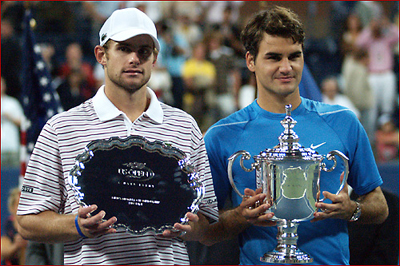
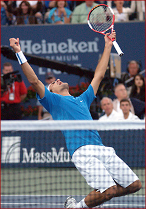

Previous: How Roger Federer Won Wimbledon 2006 | 🏠 Strategy Home | Next: Increasing Your Chances of Winning Points on Serve
How Roger Federer Won the US Open 2006
Comprehensive unified tennis knowledge base — Fundamentals, Stroke Analysis, Reference Library, and more
How Roger Federer Won the US Open 2006
John Yandell

What did the statistics say beyond the obvious?
It seemed like a stretch and it didn't happen, Federer versus Nadal in a third Slam final in a row in 2006. We tracked the numbers in their first two matches on clay and on grass, and saw how some relatively small differences translated into opposite outcomes at the French and at Wimbledon. (Click Here.) So that's why I would have been so interested to chart a third match on hard courts.
But since it was the Open final and I'd charted Roger in the last 2 Slam finals, I decided to see what the stats might show about Federer versus Andy Roddick.
And what did they show? Well, they showed that sometimes you don't need statistics to see the differences in who wins a given match between some players. But the statistics do make what seemed obvious a little more obvious, and maybe add some additional depth of understanding to what happened that day in New York City.
What happens when 80% of Roddick's serves come back?
For example, let's take the first set, a 6-1 romp for Federer. Andy Roddick serves 65% and gets broken 3 times. He wins only about half of his first serve points, and only about 25% of his second serve points. How did that happen?
Amazingly, Andy hit 22 serves total in the set and Federer got 17 of them back in play. That's about 80% of all returns in play against the alleged greatest server in tennis.
On Andy's first serve Federer returned 8 out of 13, and on his second serve, he returned 9 out of 9. And the majority of those returns started him out on even footing or better. That's pretty phenomenal if you think about it.
The interesting thing is that beyond putting the ball in play, Federer didn't even play that well, ending up with an Aggressive Margin of only +5 for the set, quite low for a pro match. But Roddick played even worse, ending with an Aggressive Margin of -2. He had 5 backhand unforced errors, no backhand winners or forced errors, and only hit 5 aces or unreturnable serves. We talked about the Agressive Margin in detail in this series, how to calculate it and what it means. (Click Here.) But briefly it's a player's winners and forced errors less unforced errors, and the player who has the highest Aggressive Margin is the winner at any level.
Federer's returns: starting the points even, and sometimes ahead.
So maybe Andy was sluggish or tight in the first set, or maybe both, as the TV guys seemed to think. To me, it was Federer's returns. Whatever the case, Roddick did really turn it up and around in that second set. Federer more or less gave away his first service game, and Andy played 5 consecutive really good games on his serve. And that was the set, one break, 6-4 Roddick.
After that first game, the second set was a much higher-level set statistically speaking, as well as much more emotionally dramatic. Andy ended up at +20 for the set, and Federer was +15. Those are high level pro numbers.
In the second, almost 3 / 4s of Andy's total winners and forced errors came on his serve (+8) and his forehand (+7), as you might expect. But he hit a couple of backhands that won points as well. Andy was also all over the net, winning 11 of 16 approaches. That was key. His aggressive margin was actually +5 on his volleys, and those 5 points were the exact point margin in the set.
Andy's net play was the difference in the second set, but...
At that point the crowd was pumped, and Andy was pumped, and it seemed at least possible that maybe he could win the match after all. Well, maybe. Watching it yourself did you really believe it was possible? I didn't, although I was actually hoping he would because I like Andy and he has really suffered under all the scrutiny about his results. And I thought it might make the pro game a little more interesting if Andy could get back in the mix at the very top.
Andy's net play was the key in that set. But when you looked at his actual technical volleys, they just didn't inspire confidence that attacking the net was a long term, solid potential dimension in his game. I think Andy needs to go to the net, and should go to the net, and he did go to the net, and it paid off. But the feeling I had was that on these particular points, in this particular set, things had just happened to go in his favor.
And one other thing. There was that backhand down the line pass that Andy missed at 2-4. He was there, had it all lined up, went for it and hit it two feet wide. It wasn't that he missed or happened to lose that point, or even that it was an unforced error. It didn't affect the outcome of the game or the set. It was just the way the shot looked. Stiff.
Andy and Jimmy: the swing has to start more from the inside.
If you compared that to the two gorgeous flowing backhand winners Federer hit down the line at other points in the set, well, you just got a different feeling. You got the feeling there was a difference in the level of game possessed by the two players. And that Andy was likely to have a few more critical backhand errors and/or missed chances later on.
Yes, Andy made some big backhands--but he had some other horrible misses. I heard Johnny Mac say that Jimbo had been telling him to "stick that backhand," and when the camera was on Jimmy, sometimes he was gesticulating like he was trying to communicate that to Andy.
Well, it sure worked for Jimmy, but then he didn't have the same kind of technical problems Andy does. As I've said, Andy could hit you or me or virtually anyone in the world off the court with his backhand, but not Roger Federer, or most of the other top players. We've looked at the reasons why in a detailed article already (Click Here), but if you look at the position of Andy's hands and compare them to Jimmy at the start of the motion, it pretty much says it all. As my friend Don Brousseau said in a recent post in the Forum, groundstrokes start forward from the inside out, and Andy's backhand is just too far out to really be a weapon at his level.

What it must feel like to feel "invincible."
Still, the set score was at one all. And the total overall points won was within 2 points: 52 total points for Federer and 50 for Roddick. So it seemed obvious that the third set was going to be critical for Andy. If he could win it, well, maybe that would show that some of that Jimmy Connors mental magic had transferred into his psyche, if not his backhand technique.
The third set was a great set with a lot of incredible shot making on both sides. In the first game, though, it looked like Federer might just crush Andy and finish the match fast. It turned out that the crushing had to wait for the fourth set, but it showed again what Roger is capable of doing.
Federer started off hitting a wide serve and then ripping a clean groundstroke winner. Then he did twice more. If you look at the ease or difficulty of the way a player wins his points, it can give you an indication of what will happen over the long run in a match. And at various times throughout the match, Federer played one or two or three points like that--just points of effortless dominance.
Aside from his limited number of unreturnable serves, Roddick didn't win many points that way--even his clean winners off his forehand didn't have that same kind of dominant feel. This view of the nature of the exchanges goes hand and hand with our theory that the player who wins the most total points tends to win the match.
Aggressive Margin By Set
1
2
3
4
Federer
+5
+15
+30
+14
Roddick
-2
+20
+17
-0-
So the set was great to watch. The way both players had chances to break and struggled to hold. The fighting back and forth. But Roddick finally cracked, losing serve at 5-6. And that game was fast and anti-climatic. That break was basically the match.
The score in the 4th set was close, but if we look at the Aggressive Margin, it wasn't as close as it seemed. Roddick played a really good statistical set, he was +17. He had 15 service winners and another 5 at the net. But Federer's numbers were phenomenal. In over 80 points, he created 27 groundstroke winners or forced errors, versus only 5 unforced errors. Throw in a few services winners and a couple of volleys and you end up with an Aggressive Margin of +30. That is over the top and beats the previous high in any of the matches I've personally charted. (The previous winner was +29 by Pete Sampras versus Andre Agassi in 2001.)
So even though there was only one break in the set, Roger actually won 11 more points than Andy, not especially close for a 7-5 set. Why? Correct, because of those little streaks of easy points in Federer's service games.
Those kinds of point differentials have a way of catching up with players. And I think that explains what happened in the fourth. Andy just couldn't keep up the effort that he had needed to win points over the course of the match. And Federer closed with the relentless and graceful calm of a trained killer. I think the word he used to describe the way he was feeling at that point was actually "invincible."
Watch the subtle shifts than eventually lead to domination.
Watch one of the first points in the fourth set from that awesome low camera view and see if you can feel what I'm talking about. I like it because it shows how the small changes in speed and court position shift the balance, then lead to domination.
On a Federer first serve in the ad court, Roddick hits a low, short return close to the middle. Federer moves up and calmly rolls a deep forehand crosscourt. Roddick responds crosscourt, but again short. Now Federer hits a second crosscourt forehand but even deeper and also slightly harder. He has Roddick about 10 feet behind the line at this point while he's up on the baseline. Roddick tries to roll a deep neutral return of his own to the middle but miss hits it short. Now Federer pushes him wide with a sharper angled crosscourt.
Under the assault, Roddick makes a fatal mistake. He tries to get the ball off Federer's forehand and hits his own forehand up the line. In one ball he goes from being somewhat behind in the point to being dangerously exposed.
Feeling that his court is open, Roddick recovers back an extra step toward the middle. But rather than go for the opening, Federer is still taking his time and pounds his backhand back down the line. The ball surprises Andy and gets a little past him. His whips up on the ball and his forehand goes up the line again, this time shorter still.
Is serving effectiveness about speed or accuracy?
And now it's truly over. Federer steps up further and hits a very smooth looking backhand crosscourt, smooth looking, yes, but also a screaming untouchable high velocity winner.
It's like Federer was methodically dissecting Andy, almost toying with him while he decided when to stick the knife all the way in. That's got to be a very uneasy and uncertain feeling on the other side of the net. Watch Roddick hang his head as he starts to walk away.
The score in the last set was 6-1. In those 7 games Federer won twice the total number of points Andy won, finishing with an Aggressive Margin of +14 while Andy was at zero.
If you look at the Aggressive Margin stroke by stroke you can see the whole story pretty clearly. As you might expect Roddick generated more total service winners. But interestingly Federer had more aces, 17 to just 7 for Roddick. Howard Brody, the deacon of tennis scientists once calculated that if a serve was well placed, you could hit aces all day long at 115mph, and interestingly that's almost exactly the speed Federer averaged.
Aggressive Margin By Set
Serve
Forehand
Backhand
Net
Federer
+19
+25
+5
+9
Roddick
+30
+8
-7
+12
John McEnroe keep calling Federer's forehand the greatest weapon in the modern game, and it would be hard to disagree with that. Roger had a big edge there, with 29 winner or forced errors versus 21 for Andy. And incredibly, Roger only made 4 unforced errors--that's one unforced error per set! Roddick had 13 unforced errors. So that was a big swing.
Federer: better in most, or is that all dimensions?
On the backhand, Roger was +5 for the match, not exactly statistically dominating. But Roddick was -7. That's a 12-point swing that accounted for almost half of the total point margin in the match. Interestingly, as shaky as he looked at times, the only other statistical battle Roddick won besides the serve was at the net, where he was +12 versus Roger's +9.
So, what does it all mean? I think the facts are that Federer is better from the backcourt in all dimensions than Andy, moves better, can serve very effectively himself, and has no problem getting enough of Andy's serves in play to break him, if not at will, certainly on a regular basis. And he has a great looking net game when he uses it, which is sparingly, but effectively and appropriately. Hey, that's nothing against Andy, it's the same report on Federer versus everyone, with the possible exception of Rafael Nadal. Obvious yes, but the details I think proved interesting.

John Yandell is widely acknowledged as one of the leading videographers and students of the modern game of professional tennis. His high speed filming for Advanced Tennis and Tennisplayer have provided new visual resources that have changed the way the game is studied and understood by both players and coaches. He has done personal video analysis for hundreds of high level competitive players, including Justine Henin-Hardenne, Taylor Dent and John McEnroe, among others.
In addition to his role as Editor of Tennisplayer he is the author of the critically acclaimed book Visual Tennis. The John Yandell Tennis School is located in San Francisco, California.
Source: tennisplayer.net archive — How Roger Federer Won the US Open 2006.docx (John Yandell teaching library, 2002-2022). Extracted and rendered as HTML for Tennis Future Lab.